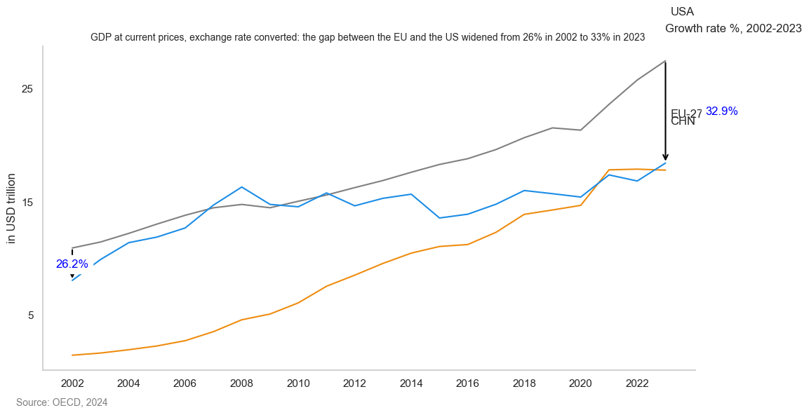
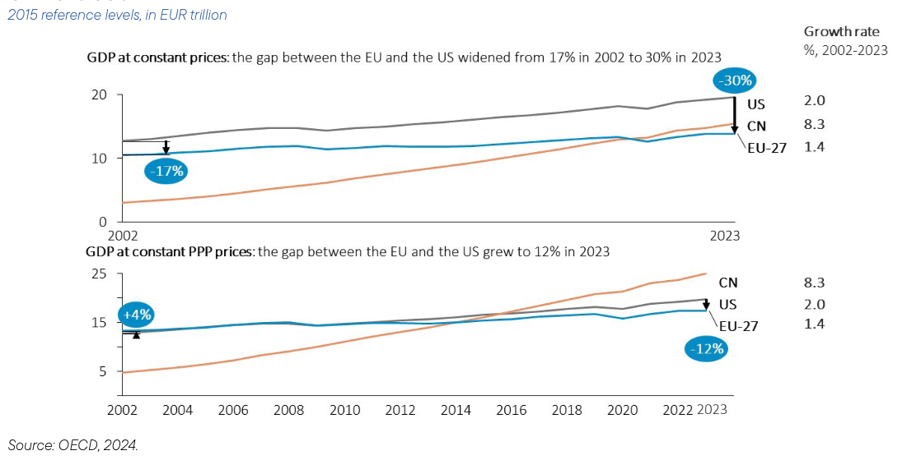
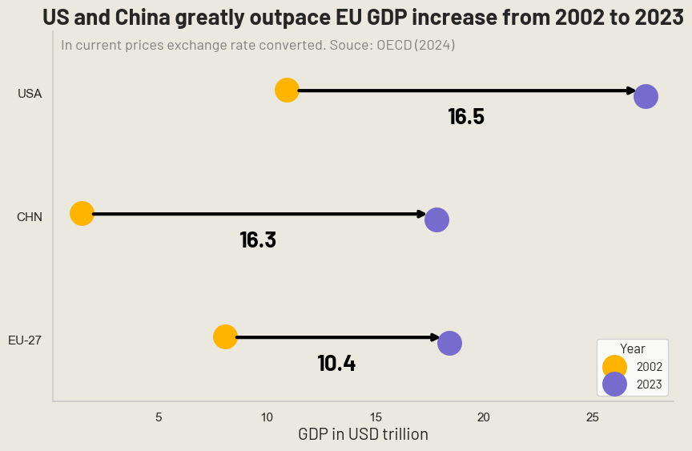
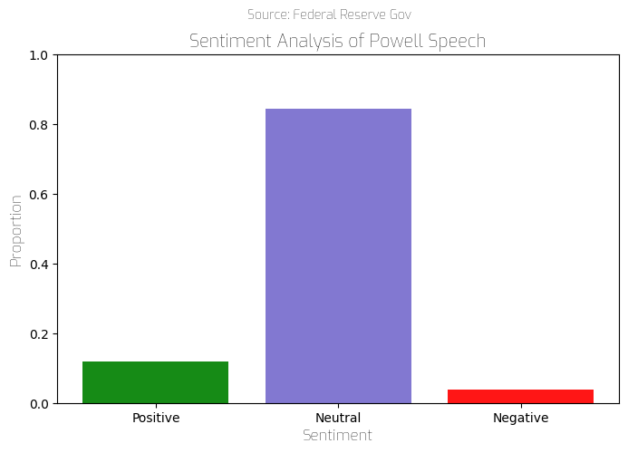
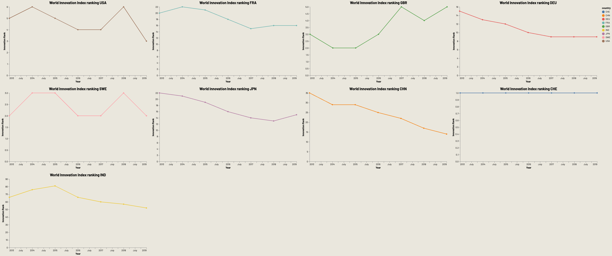

(top) I embedded these charts from the Economic Observatory while adapting them to my
own visualisation profile. Some would certainly be ready to trade today's technology to return to the £1 pint of bitter ! To read more about them,
refer to Festival of Economics.
(right) Charts created through the Economics Observatory handy chart tool.
Among many of the subjects discussed at the Festival of Economics was the sense of losing innovation in the UK due to too much bureaucracy, and high taxes. This isn't a new argument, but it is one that is gaining traction as one that is mentioned everywhere to justify Europe's lag. I was interested in seeing whether charts could provide some light on the story. Here I was interested in seeing whether charts could provide some light on the story. This is no where comprehesive enough and only a starting point. I'd like to include data about legislation burden in absolute numbers. To listen to the podcast refer to Economic Observatory. https://www.economicsobservatory.com/festival-of-economics-2024
The chart on the left is the original visualization from Mario Draghi's report on European Competitiveness. I found it lacking clarity and visual appeal, with minimal use of color making it less engaging. In the middle, I replicated the graph using Python's Seaborn library, experimenting with a different style to convey the same message. The enhanced chart on the right features an improved color palette, font selection, and overall design. However, it has a limitation: our perception can struggle to distinguish closely positioned horizontal lines due to the Müller-Lyer illusion.
  Understanding the sentiment behind key speeches can be of great interest for policy makers. By using a combination of Beautiful soup to parse over the latest Federal Reserve Chairman Jerome Powell speech and NLTK sentiment analysis, this bar chart can provide us with insight on the FED's economic outlook. The speech in question was Powell's Nov 14 speech. Note that while BeautifulSoup was simple to administer, I relied heavily on generative AI and internet sources to understand sentiment analysis over which I encountered several technical issues. For further understanding this is my Google colab.
Using a loop to batch download from World Bank and Global Innovation Index APIs, I was able to create a large dashboard to follow how several countries' innovation index has shifted throughout the years. The analysis can be found in my Google Colab.

(top) This Circular migration plot is a past project I conducted measuring outflow and inflow of student studying abroad either as part of exchange programs or to study abroad. Source: UNESCO.
I removed countries which had too strong of inflow or outflow such as China, and India. (outflow of Chinese students towards
the United States occupied the major part of the graph). It is interesting to note how anglo-saxon countries are by far considered the most attractive and how often the closer
culturally, the more exchanges go both ways.
(right) These are charts of Europe showing regional differences in GDP per capita as well as facilities of clean technologies.
The map on clean technology is inspired by a similar map in Mario Draghi's report on Europe competitiveness.
In the US, the largest producer of corn in the world, less than 2% of corn is used for direct human consumption while 35% is used for animal feed (World Resources Institute). In mid 2022, corn futures increased to the highest price levels with only 2012 reaching close. Curious to investigate whether the increase of corn prices would impact direct corn products less than it would for meat products. To do so, I used the micro-price data and averaged the price from meat products (i.e Frozen Beefburgers, chicken breast, meat pie, canned meat and more), and corn products (i.e corn snack, canned sweetcorn, cinema popcorn). I then used data from FRED on corn prices. The difficulty here was in choosing which products to include which remains very subjective to superficial research on what products contain. More on the process can be found here.
The hardest part here was to choose which countries could compare best with the US (population, cultural, innovation, gun ownership), and having to change the sign for certain indicators (when satisfaction observation value increases it should be green but when homicide increases, it should be red).